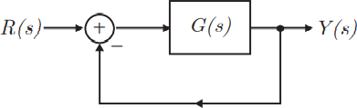
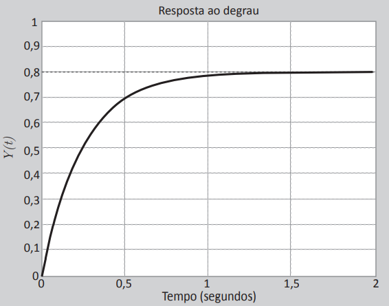

Considere a modelagem matemática de um processo e a resposta à excitação do tipo degrau unitário apresentados a seguir.
 
Nesse processo, o tempo de estabilização é de 1 segundo para o critério de 4 constantes de tempo, a função
de transferência de malha fechada é e a função de transferência no ramo direto é
.
Com base nas informações apresentadas, avalie as asserções a seguir e a relação proposta entre elas.
I. A função de transferência do ramo direto é
PORQUE
II. A função de transferência de malha fechada é
A respeito dessas asserções, assinale a opção correta.